Instalasi Software Pendukung
Windows 10
Install Microsoft SQL Server Express
Pertama, install Microsoft SQL Server Express sebagai berikut:
- Cari file Microsoft SQL Server Express yang sudah Anda download. Jika belum download silahkan download dahulu disini.
- Klik 2x pada file Microsoft SQL Server Express, dan kemudian klik New SQL Server stand-alone installation or add features to an existing installation:
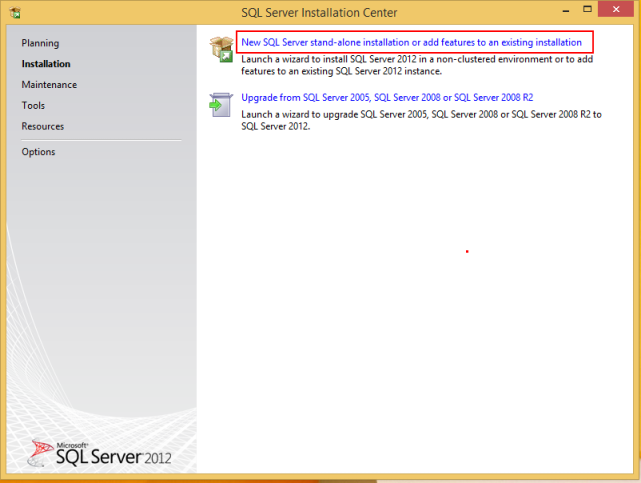 - Centang CheckBox I accept the license terms, dan kemudian klik Next.
 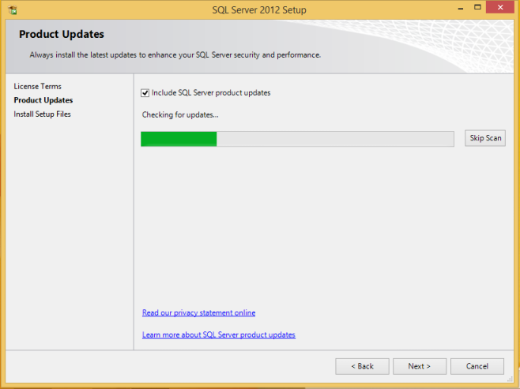
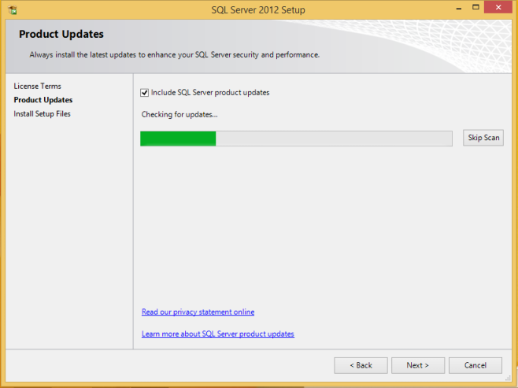
- Klik Next.
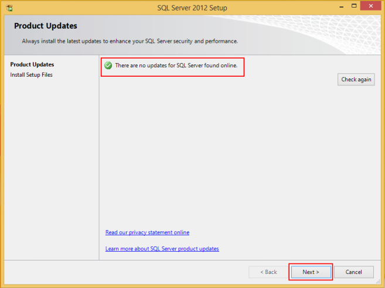 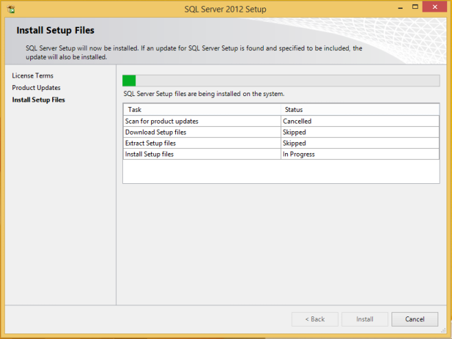 - Klik Next.
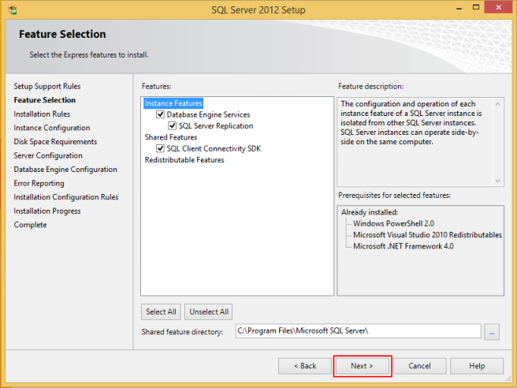 - Klik Next.
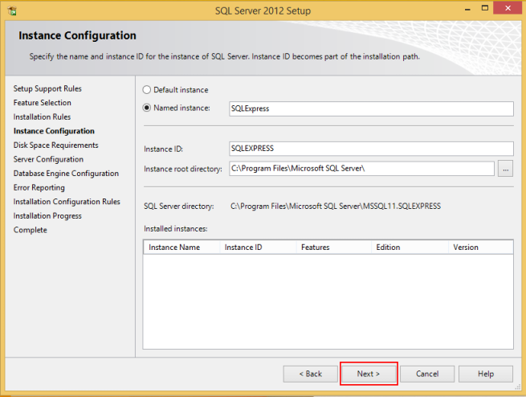 - Klik Next.
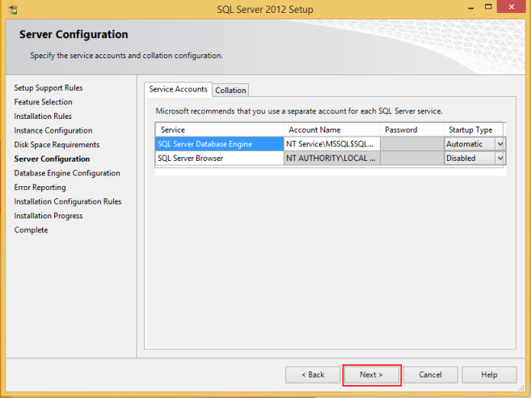 - Klik Next.
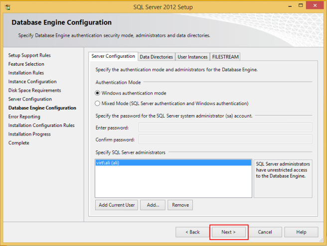 - Klik Next.
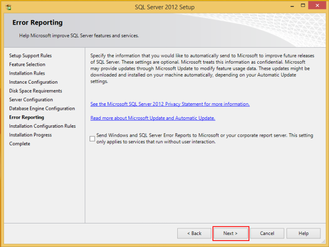 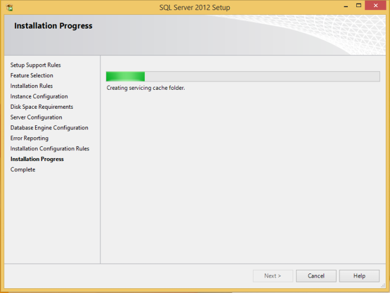 - Install sukses, klik Close.
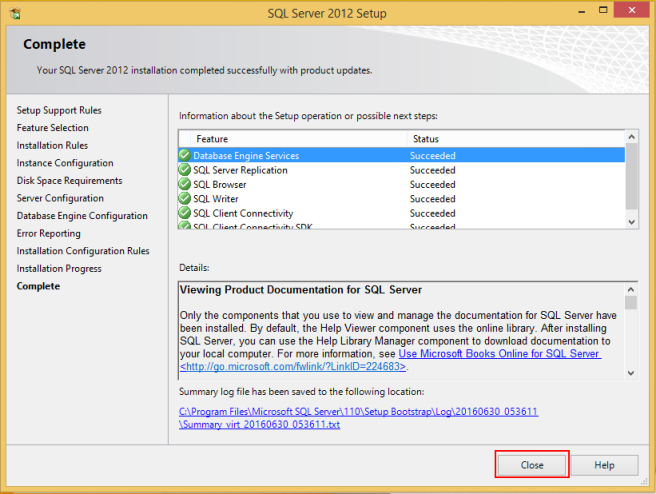 - Klik icon close.
Install Microsoft SQL Server Management Studio Express
Kedua, install Microsoft SQL Server Management Studio Express sebagai berikut:
- Cari file Microsoft SQL Server Management Studio Express yang sudah Anda download. Jika belum download silahkan download dahulu disini.
- Klik 2x file Microsoft SQL Server Management Studio Express.
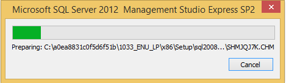 - Klik New SQL Server stand-alone installation or add features to an existing installation:
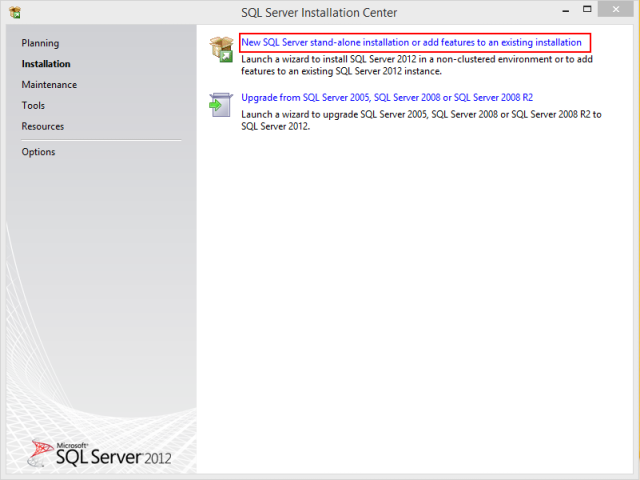 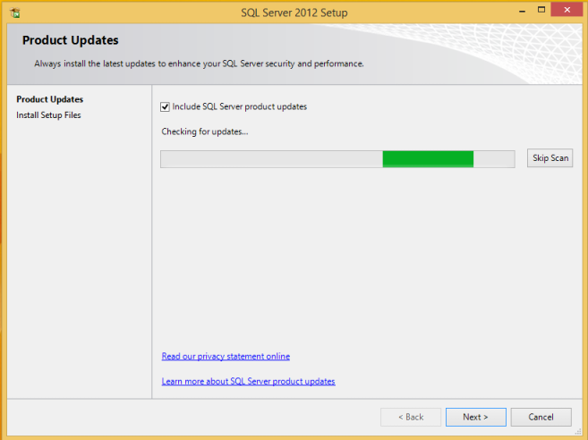 - Klik Next.
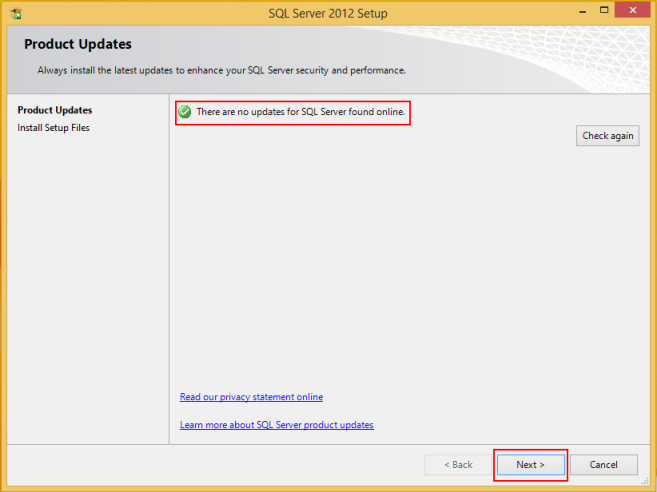 - Klik Next.
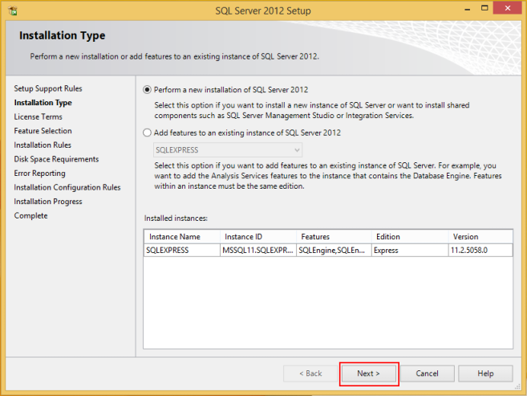 - Centang CheckBox I accept the license terms, dan kemudian klik Next.
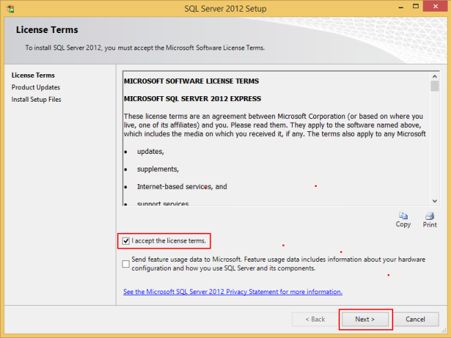 - Klik Next.
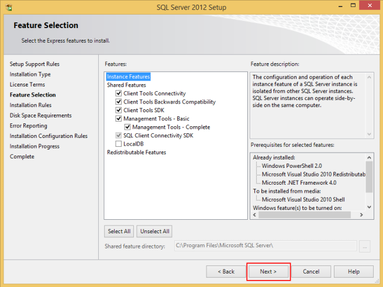 - Klik Next.
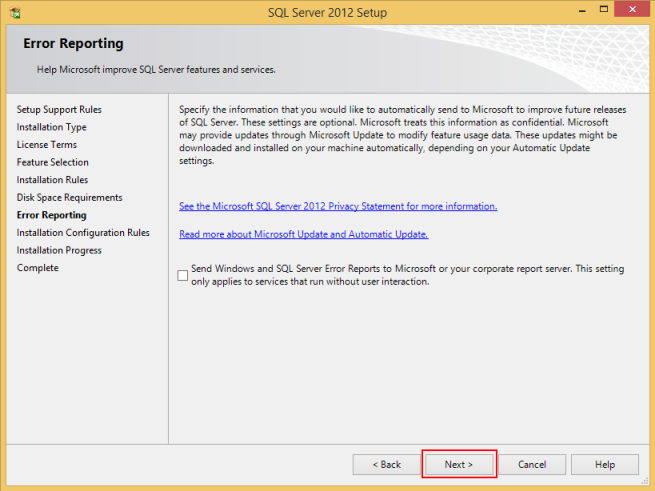 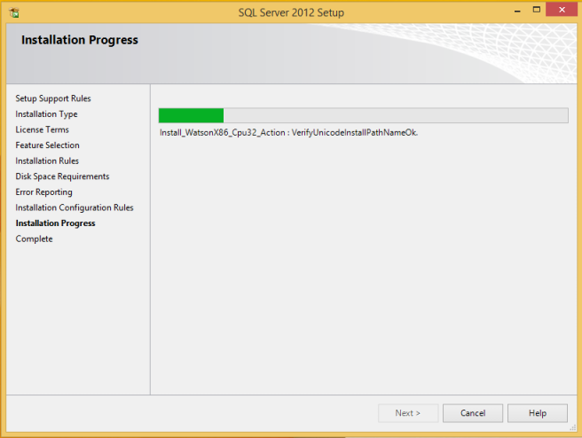 - Install sukses, klik Close.
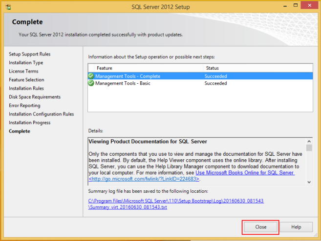 - Klik icon close.
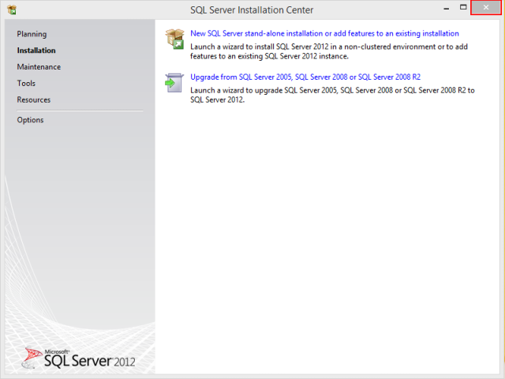
Selesai
Selanjutnya install Sotware OtomaX Free Edition, selengkapnya klik disini.
Catatan: Tata cara di atas berlaku untuk Windows 10 32 bit maupun 64 bit.